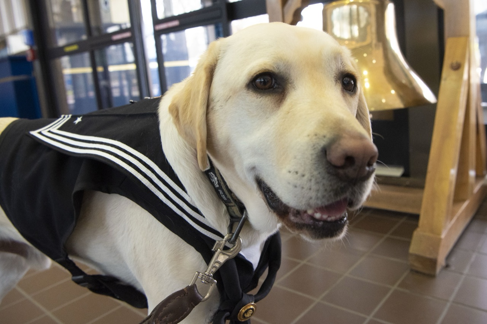
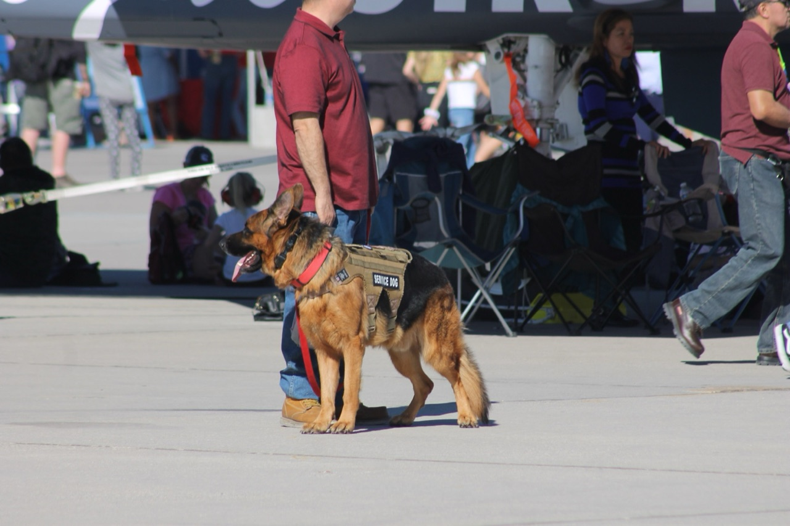
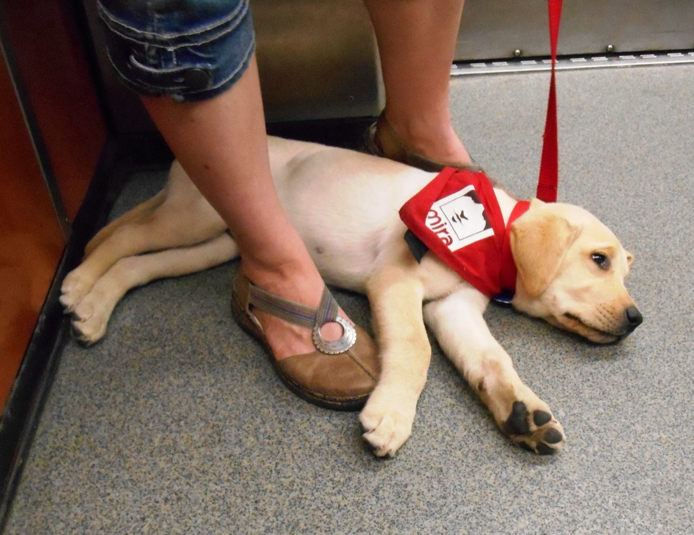
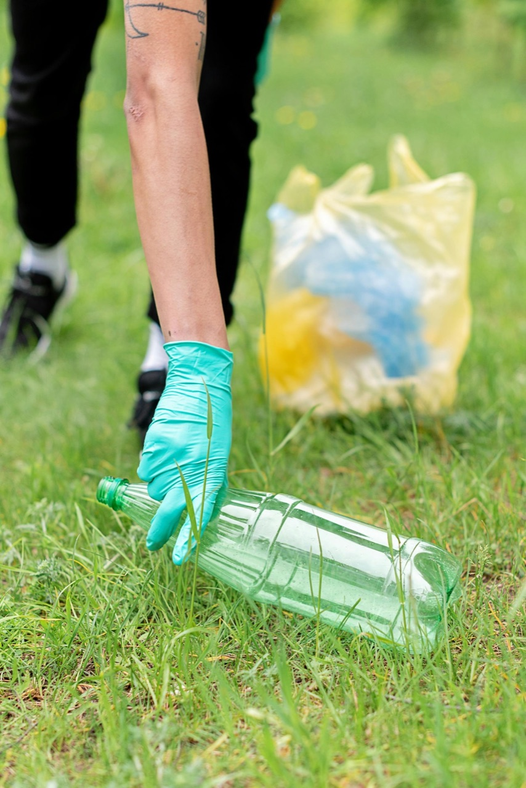
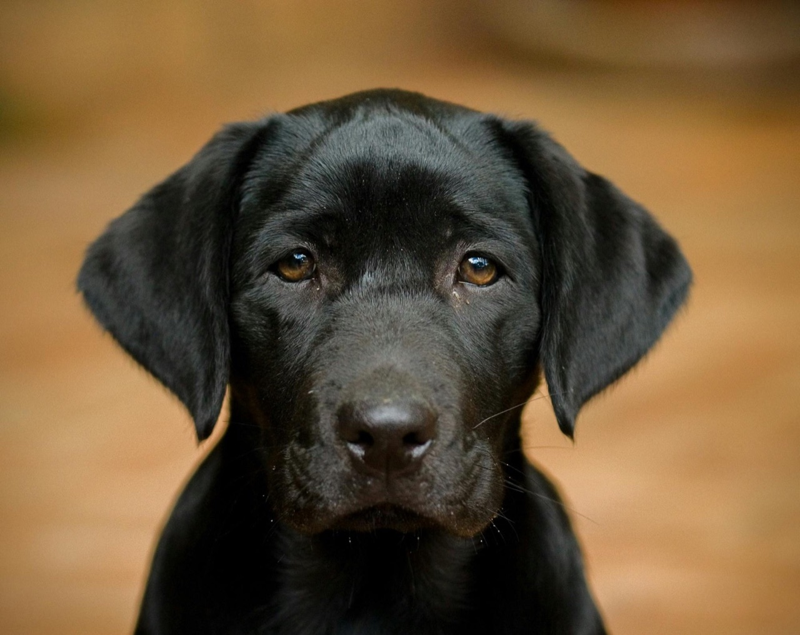

An abused child doesn't have to become an abusive parent. Joan Kaufman and Edward Zigler's 1987 review challenged that expectation. An explanation of how you got here is different from a prediction of everything you'll do next.
We inherit tendencies and learn habits before we're old enough to examine them. I think we also have a responsibility to examine them once we can. That's what I mean by the third thing: taking part in the person you're becoming. A well-trained service dog helps me see the distinction, though the dog can only carry the comparison so far.
What genes can tell us
Identical twins raised in different homes can resemble one another on measures of personality, interests and intelligence. Thomas Bouchard and his colleagues' Minnesota study helped establish that inherited differences influence psychological differences. The twins still don't live the same life.
The statistic used to describe this is heritability: how much variation in a measured trait, within a particular population and environment, is associated with genetic variation. It doesn't tell you what fraction of a person was made by genes. Nor does a highly heritable trait have to be impossible to change.
Upbringing is also bigger than a parenting style. Two children in one home can have different friends, illnesses, chance encounters and relationships with their parents. Researchers call experiences that make siblings different nonshared environment. Estimates of that component can also include measurement error. The part a study hasn't explained is not a measured quantity of free will.
Even Bouchard's paper cautions against treating heritability as a reason to dismiss parenting and education. Finding a small effect of shared upbringing in that sample does not tell us what would happen if a child were denied safety, food or schooling.
What the dog reveals
A service dog makes inherited tendencies and learned behavior visible together. At The Seeing Eye, prospective breeding dogs receive guide-dog training and are selected for health and behavior. Their puppies then live with raisers who teach basic obedience and introduce them to ordinary life before formal training. Selecting parents does not finish the job.
Breed is a particularly rough guide to the individual. In Kathleen Morrill and colleagues' 2022 study, breed explained about 9 percent of variation across the surveyed behaviors in the confirmed-purebred analysis. This compares differences among dogs; it does not mean that breeding causes only 9 percent of one dog's behavior. The measures came from owners, whose expectations about breeds can affect their answers.

Early experience matters, too. The American Veterinary Society of Animal Behavior identifies the first three months as the most important period for socialization, meaning safe exposure to unfamiliar people, animals and places. It also recommends continuing afterward. A missed early opportunity can raise the risk of fear and behavior problems. It doesn't make later learning impossible.

What I love in a good service dog is its steadiness. Breeding and training help make that possible. Dogs also learn, solve problems and make decisions. Appreciating Sully doesn't require denying that ordinary sense of choice.
The difference I care about is moral accountability. We don't ask Sully to explain why helping a stranger is right, or to reconsider a principle when it harms someone. We ask that of people. That distinction concerns responsibility, not an extra biological ingredient these studies have detected.
Character takes practice
Suppose a wrapper misses the trash can in an empty parking lot. Going back for it is an ordinary decision, with no audience and little reward. It gives you one chance to do what you already think is right.

Aristotle, in Book II of the Nicomachean Ethics, argues that we become just by doing just acts. He also makes a distinction the habit slogan can miss: an act done accidentally or under instruction is different from an act understood and chosen for its own sake. Repetition matters, but so does the reason for repeating it.
That is a useful account of responsibility even if our choices have causes. You don't need to settle the metaphysics of free will before correcting a lie or apologizing for an outburst. Reflection, practice and help from other people are among the ways a life changes.
I think a good life asks for this kind of effort. Sometimes it means resisting comfort; sometimes it means accepting care instead of treating suffering as an achievement. The difficult option is not automatically the decent one. Picking up the wrapper is right because the litter shouldn't be left there, not because walking back is unpleasant.
Pain can prompt change
Pain can make an old way of living harder to defend. I think that's one reason the story of a person turning their life around has such force. But I can't turn that judgment into a rule that almost nobody changes while life is comfortable. Learning from someone else, becoming responsible for a child, or finally having a safe place to live can also give someone a reason to change.
In Romans 5:3-5, Paul connects suffering with perseverance, character and hope. His hope rests on God's love. That is a Christian account of suffering, not a psychological guarantee that a painful experience will improve you.
Psychologists use post-traumatic growth for positive changes people report after struggling with a crisis. Patricia Frazier and colleagues followed students from before to after distressing events. Students' later reports of growth generally did not match changes on questionnaires taken before and after the event. Some scores did improve. Remembering growth and measuring a change over time are different claims.
Cathy Spatz Widom and colleagues' long follow-up of childhood maltreatment found that estimates of transmission differed depending on whether they used agency records, parents' reports or their children's reports. Risk can rise without making an outcome inevitable. Those records don't tell us how many people consciously decided to break a cycle, and they don't reduce prevention to strength of will.
I don't want a hopeful argument to become another demand placed on someone who has been hurt. Recovery can require safety, treatment and other people's patience. Continuing to struggle does not mean you refused a lesson that someone else managed to learn.
Risk is not a verdict
There is a dangerous step from saying a trait can be inherited to deciding whose children should exist. On May 2, 1927, the Supreme Court upheld Virginia's compulsory-sterilization law in Buck v. Bell. Carrie Buck challenged the order to sterilize her. Only Justice Pierce Butler dissented.
Three generations of imbeciles are enough.Oliver Wendell Holmes Jr., Buck v. Bell, 274 U.S. 200, 207 (1927)
Holmes's opinion describes Carrie, her mother and her young daughter as intellectually disabled using the language of the eugenics movement. It accepts the judgment that Carrie was likely to have children deemed socially inadequate. These are the court's assertions. The opinion does not supply reliable genetic evidence for them.
The decision is evidence of what a government was willing to do to a person on the strength of those assertions. It is not a study of inheritance. Even a valid estimate of inherited risk would leave the ethical question intact: what could justify taking away this person's reproductive choice?
Family history can be relevant when someone thinks about having children. It doesn't establish a person's worth. Nor can this essay promise that every inherited illness or disability will yield to effort. My argument for responsibility has to allow for limits on what someone can control.
What I believe
I think there is a moral order to the world, and that what we put into it is not lost. That is a belief. The dog studies don't establish it, and neither do the stories of people who change after suffering.
The Bhagavad Gita, 2.47, gives the version I find most useful: act without demanding the fruits of the action, and don't use uncertainty about the result as a reason for inaction. Krishna is speaking to Arjuna about duty. My application is narrower: doing right needn't come with a promise that life will pay you back.
I also believe the possibility of turning toward a better life should remain open to everyone. That doesn't mean everyone has the same practical chance. Poverty, coercion, illness and the availability of help change what a person can do. If I call someone responsible, I owe them some care in judging what was actually within their reach.

I can't prove that a choice is independent of everything that caused it, or that the universe notices it. The choice still changes what happens to the person on the receiving end.
Sources and limits
The research supports particular claims about inheritance, learning and risk. The argument about responsibility, and the belief in a moral order, are mine.
Read the methods and source notes
Inheritance and dogs
- Bouchard et al. (1990). Full paper, especially the variance model and discussion of twins' contact and rearing environments. Twins were recruited, not randomly assigned to homes.
- Morrill et al. (2022). Full paper, breed-variance analysis and methods. The result is an average across measured traits, not total genetic influence or a forecast of working-dog success.
- Bray et al. (2017). Guide-dog study. Associations between maternal care and later outcomes could be confounded by inherited temperament. They don't tell human parents to withhold affection.
Abuse and growth
- Kaufman and Zigler (1987). Literature review. Its transmission estimate combined studies with different samples, definitions and follow-up periods. It was not a census of survivors or their intentions.
- Widom et al. (2015). Prospective follow-up of documented childhood maltreatment and matched comparisons. Informants and surveillance affect the estimates; an agency report is not a complete measure of abuse.
- Frazier et al. (2009). Author-uploaded paper. Mostly female undergraduates, a short interval, and self-reported events limit generalization to other trauma survivors.
Texts and judgment
- Aristotle. Nicomachean Ethics, II.1 and II.4, W. D. Ross translation. Habituation and deliberate action belong to a philosophical account of virtue.
- Paul. Romans 5:3-5, World English Bible. Bhagavad Gita. 2.47, Swami Mukundananda translation and commentary. The essay paraphrases these passages.
- Buck v. Bell. Original U.S. Reports opinion, pages 205-208. A primary document for the ruling and its rationale, not confirmation of the family's alleged hereditary condition.
Photographs: Sully by Lisa Ferdinando (U.S. Department of Defense, CC BY 2.0); twins, U.S. Navy (public domain); German Shepherd by Noah Wulf (Wikimedia, CC BY-SA 4.0); Mira puppy by Jeangagnon (Wikimedia, CC BY-SA 3.0); litter by Mikhail Nilov and the Labrador by Paul Groom (Pexels).